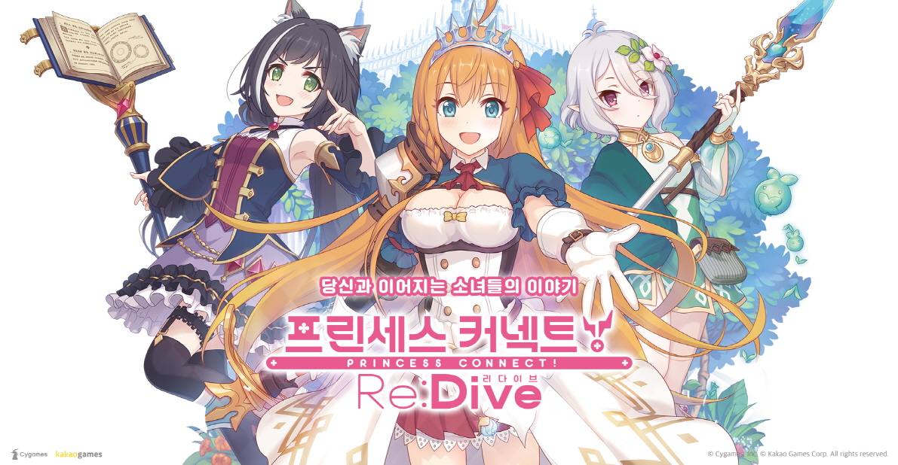

☰ MENU
Top
처음이신가요?
게임소개
뉴비 지침서
자주 묻는 질문들
시스템
상점
미션
데일리
노멀
길드하우스
캐릭터
캐릭터 목록
캐릭터 배치 순서
캐릭터 포지션
탱커
물리 딜러
마법 딜러
스킬
버프
디버프
상태 이상
스테이터스에 대하여
계산식
메모리 피스
☆6 재능개화
퀘스트
몬스터
메인 퀘스트
NORMAL
HARD
VERY HARD
던전
탐색
조사
성적조사
신전조사
아레나
아레나에 대하여
이벤트
이벤트
루나의 탑
클랜전
추천 캐릭터
테크닉

제작자의 한마디
이 위키는 주식회사 Cygames가 제작하고 카카오게임즈가 서비스 중인 모바일 게임, 『프린세스 커넥트! Re:Dive』의 정보를 정리해놓은 사이트입니다.
발빠른 정보 제공을 위해 최신화는 수시로 실시하고 있습니다만, 각 웹진이나 실시간으로 업로드되는 유저 정보에 비해 갱신이 느릴 수 있다는 점 양해 부탁드립니다.
※ 수집된 정보는 일본어판을 기준으로 작성되었으며, 일부 내용은 한국어판 내용과 일치하도록 수정하였습니다.